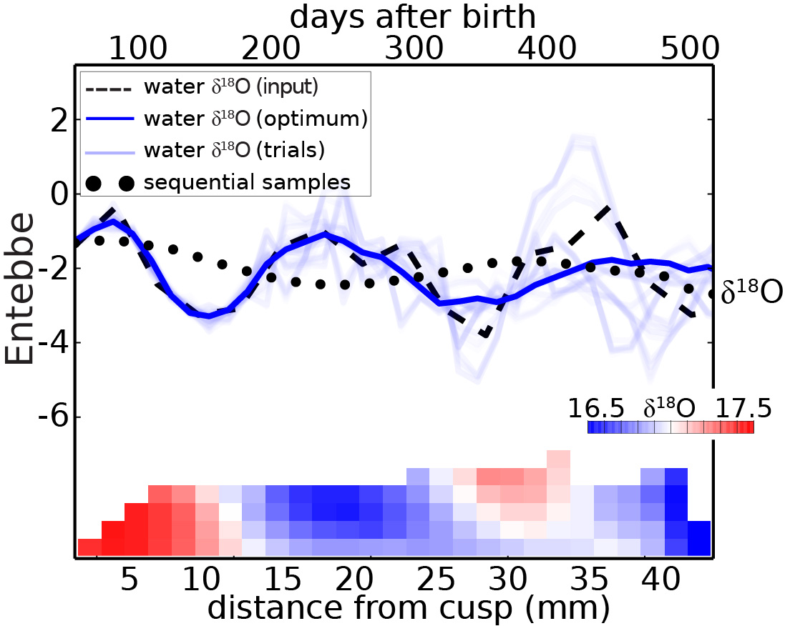

I am a lecturer and college fellow in the Department of Human Evolutionary Biology at Harvard University. My research uses dental anatomy, development, and chemistry to investigate how past environments have shaped human behavior and evolution over time. My broader interests include the relationship between climate and evolution on a variety of scales, with a particular on human ancestors in Africa.
Prior to my lectureship at Harvard I worked as a postdoctoral research fellow at the Forsyth Institute in Cambridge, a medical and dental nonprofit that has pioneered research into dental health and development for over a century. My work included study of the genetics and proteomics of tooth formation, and tools by which teeth can be turned into diagnostic indicators of childhood exposure to pollutants in contemporary and ancient populations.
My earlier doctoral work in human evolutionary biology demonstrated how seasonal hydrological patterns can be inferred from fossil teeth associated with human ancestral remains in east Africa, 2–5 million years ago. This work combined diverse methods including synchrotron imaging, live animal experimentation, field work in northern Kenya, stable light isotope geochemistry, physiological modeling, and computation-based optimization routines. These methods remain integral components of my research program.
Laboratory methods
In my work I use a variety of methods to study enamel formation, including work with animal models, confocal microscopy and computed tomography, stable light isotope geochemistry, proteomics, genetics, machine learning, and Markov Chain Monte Carlo simulations.
Fossil collection

My research involves collaboration with field teams and museums, sampling paleontological materials from field sites in order to reconstruct past environmental and behavioral patterns.
Computational modeling
Interpreting the large datasets produced by modern methods in biology requires computational tools and modeling. In my work I use physiological models, optimization routines, and machine learning tools to learn more about processes of growth, behavior, and environment from teeth.
Teaching and mentoring
At Harvard I've taught multiple introductory human evolution classes at the undergraduate and graduate level, and I regularly teach a class that I designed on human evolution and climate change. At Harvard I worked as a fellowships tutor with students at the college for four years. I've worked as a teaching assistant in human anatomy and taught human anatomy labs, and have served as a teaching assistant for geology, ecology, paleontology, human evolution, and archaeology classes at the Turkana Basin Institute in Kenya.
Community
Science is highly collaborative, and today scientists rely not only on giants of the past, but stand on the shoulders of their peers. I am proud to work alongside scientists from many institutions and disciplines globally.
My C.V.
For a more detailed record of my research, publications, funding and presentations.